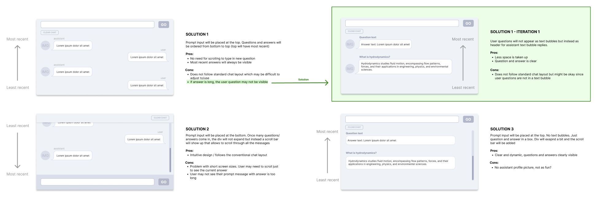

Team
Emma Souannhaphanh
My Role
Front end developer
UX / UI Designer
Tools
React
Github
Tailwind CSS
Daisy UI
HTML/CSS/JavaScript
Figma
Photoshop
Timeline
4 weeks (Summer 2023)
OVERVIEW
Concept
Overview My teammate and I designed and developed Study Space over a span of four weeks during the summer of 2023. Our goal was to create a user-friendly dashboard web study application that keeps students on track and motivated. The app offers progress tracking and a range of useful features, including a Pomodoro timer, a to-do list with CRUD functionality, and an AI-powered chatbot.
Problem
One significant challenge commonly encountered by students while studying is staying productive. This issue can arise from digital distractions and the tendency to procrastinate, leading to poor academic performance.
Solution
A web-based productivity tool designed with students in mind. This all-in-one solution incorporates essential features, including a Pomodoro timer, to-do list, chatbot, and progress tracker, all aimed at enhancing focus and motivation during study sessions.
EMPATHIZE
Secondary Research
Secondary research was conducted and four main insights were gained:
1. A pomodoro technique and clear goals help avoid procrastination.
2. Individuals are more likely to successfully stick to a habit when the task is planned and progress is recorded.
3. 80% of user viewing time on a website is spent above the scrolling fold.
4. The more tabs an individual has open, the harder it it to for them to stay focused and productive.
COMPETITIVE ANALYSIS
Lack of features that help avoid digital distractions
After examining five most popular Pomodoro and studying web apps, a common issue arose. The web apps often either fixated solely on the Pomodoro timer, or if they did incorporate additional features, they contained excessive information that may be distracting for the student. Additionally, most of them didn't effectively address digital distractions.
DESIGN
Insights → Design Opportunities
After looking over the insights from the research done, the following design opportunities were focused on:
1. Allow users to track their progress to further motivate them.
2. Provide salient information clearly and immediately.
3. Provide users with a search bar alternative to prevent them from opening new tabs.
WIREFRAMES
Exploring the Layout
Wireframes were created for desktop view to explore the layout. A dashboard layout was used to prevent the need for scrolling and give the user instant access to important information. The progress and study tools were split into two pages to prevent overwhelming the user with too much information.
DEVELOPMENT
Planning ahead
Before beginning development, a react family tree diagram was created to plan a comprehensible structure of the app. Even though we made some tweaks to the diagram as we went along, it served as a handy roadmap for the essential components during the initial development stages.
ITERATION
Layout Improvements
1. Previously, The chat layout would expand in height, causing the chat prompt text box to float downward, making it invisible to the user unless they scrolled down. To address this issue, the chat box was repositioned to the top, the order of the messages was reversed, and the user’s question was placed as header above the reply.
2. A new mobile layout was introduced, utilising a tab layout since the dashboard layout from the desktop would require scrolling to view all of the features. Wireframes were created to explore the new layout, and were implemented during development.
KEY FEATURES
Light mode and Dark mode
Option to switch between light mode and dark mode to ensure accessibility and accommodate different different light conditions.
To do list
A “My Tasks” feature with CRUD functionality and allows users to undo delete actions.
Pomodoro timer
A classic pomodoro timer with a full screen option to limit distractions.
Chatbot
A chatbot to function as a search bar and reduce the number of tabs the user may need to open.
Progress tracking
A progress tracker to display completed tasks and study sessions from the past week to help students stay motivated.

Responsive layout
A dashboard and tab layout for desktop and mobile devices to ensure features are clearly visible.
REFLECTION
Takeaways
Iterated a bunch! Most of the iterations occurred during the development stage which pointed out the importance of testing and iterating in the early design stages when it’s more manageable to address issues.
Became familiar with the OpenAI API. In this project, I had my first experience working with the OpenAI API. I learned how to integrate it into the web app and ensure the API key remained secure during deployment.
Built my first complex React web app! Incorporating numerous features into the study web app offered various chances to create React components and explore their relationships within their family tree of components.
Next Steps
Conduct user testing. The next crucial step is to perform user testing with students. This will reveal potential issues with our study web app and measures its effectiveness in enhancing productivity.
Implement a database. Currently, all user data is located in localStorage. By introducing a database, users will be able to access their progress from different devices.
Gamify the web app. To further motivate the student, the web app could be gamified with the inclusion of progress points that allow users to unlock different layouts.
Sources
https://www.nngroup.com/articles/scrolling-and-attention/
https://able.ac/blog/having-too-many-browser-tabs-open-hurts-your-productivity-really-bad/
https://jeffhuang.com/papers/ParallelBrowsing_HT10.pdf
https://todoist.com/productivity-methods/pomodoro-technique#